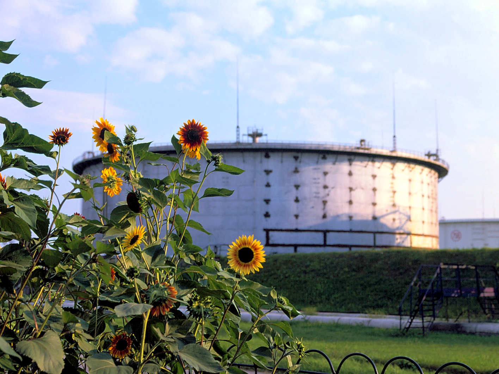

ЭКОЛОГИЧЕСКАЯ ПОЛИТИКА ПАО «Укртатнафта»
Наш девиз: от экологии производства ─ к экологии топлив.
Основная цель: модернизация и развитие современных систем нефтепереработки, снижение выбросов в окружающую среду, утилизация отходов производства.
Основные принципы:
- внедрение и поддержание эффективной системы экологического менеджмента, ос-нованной на требованиях стандарта ДСТУ ISO 14001;
- приоритет экологической безопасности как составной части национальной без-опасности;
- выполнение требований украинского законодательства об охране окружающей среды;
- отслеживание и анализ природоохранных мероприятий и своевременного реагиро-вания на их изменение;
- принятие управленческих и инвестиционных решений на основе многовариантно-сти сценариев развития с учетом экологических приоритетов;
- проведение научно обоснованной экологической политики и развитие научных ис-следований в области охраны окружающей среды;
- приоритет внедрениям наилучших существующих технологий;
- сотрудничество с другими предприятиями и институтами, работающими в области использования экологически чистых и энергетически эффективных технологий;
- содействие проведению исследований влияния предприятия на окружающую сре-ду;
- регулярное осуществление анализа воздействия деятельности предприятия на окружающую среду;
- учет результатов такого анализа при принятии деловых решений с целью уменьше-ния негативных воздействий на окружающую среду;
- сохранность и создание новых зеленых насаждений;
- осуществление мероприятий по улучшению системы очистки сточных вод;
- повышение осведомленности персонала предприятия в области охраны окружаю-щей среды и обеспечение должного уровня понимания важности экологических ас-пектов;
- достижение высокого уровня знаний работников предприятия в области ликвида-ции аварийных ситуаций и по другим вопросам защиты окружающей среды путем периодических проверок.
ПАО «Укртатнафта» является крупнейшим в Украине нефтеперерабатывающим комплексом, считает охрану окружающей среды приоритетным направлением своей деятельности.
Мониторинг окружающей среды осуществляется по трем направлениям:
2. ОХРАНА АТМОСФЕРНОГО ВОЗДУХА
Сокращение вредных выбросов в атмосферу — одно из приоритетных направлений деятельности предприятия в сфере экологии. Контроль за состоянием атмосферы в ПАО «Укртатнафта» проводится собственной аттестованной лабораторией:
На предприятии действует многолетняя практика мониторинга загрязнения атмосферного воздуха по установленным эталонным точкам санитарно-защитной зоны (СЗЗ), а также на границе СЗЗ предприятия и в жилой зоне г. Кременчуга. Анализ состояния атмосферного воздуха проводится ежемесячно в 6 точках, по 5 ингредиентам, с учетом направления ветра в сторону жилой зоны, точки Т-10 и Т-11 контролируются в один и тот же день последовательно для контроля изменений концентраций загрязняющих веществ по мере удаления от предприятия.
Информация содержит:
Результаты измерений фактических концентраций загрязняющих веществ в атмосферном воздухе по сероводороду, фенолу, ксилолу, толуолу, углеводородам ( карта )
Данный мониторинг позволяет в полной мере информировать общественность о качестве атмосферного воздуха в зоне влияния ПАО «Укртатнафта».
2. ОХРАНА ВОДНЫХ РЕСУРСОВ
ПАО «Укртатнафта» имеет наивысший в отрасли показатель водооборота 99,7–99.8% и является единственным НПЗ, работающим без сброса сточных вод в открытые водоемы. Регулярные исследования, проводимые Украинским центром охраны вод по скважинам вокруг пруда-испарителя, подтверждают снижение загрязненности подземных вод и соответственно правильность прогноза специалистов по завершению самоочистки подземных горизонтов, в 2003–2007 годах.
В связи с формированием очагов и ореолов загрязнения грунтов и подземных вод нефтепродуктами в районе расположения объектов промплощадки ПАО «Укртатнафта» начиная с 1988 г. по настоящее время проводятся систематические научно-исследовательские работы по экологической оценке воздействия предприятия на подземные и взаимосвязанные с ними, поверхностные воды. Работы проводятся в сотрудничестве с Украинским научно-исследовательским институтом экологических проблем (г. Харьков) на основании лабораторных исследований сети наблюдательных скважин ( карта ).
Целью работ является ведение специализированного мониторинга с оценкой изменения состояния загрязнения подземных вод и тем самым — оценка эффективности природоохранных мероприятий, реализованных на ПАО «Укртатнафта».
-
территория непосредственно промплощадки ПАО «Укртатнафта», где основными источниками загрязнения являются технологические установки, резервуары готовой продукции, продуктопроводы и коммуникации, очистные сооружения и шламонакопители;
-
район воздействия промплощадки (зона трансформации), включающий территорию подверженную загрязнению подземных и поверхностных вод в результате миграции нефтепродуктов от промплощадки (очага загрязнения) к зоне дренирования (р. Псел);
-
район расположения пруда — испарителя, фильтрационные потери из которого обусловили трансформацию природного качества подземных вод.
В качестве основных объектов изучения рассматривались:
В результате реализации основных водоохранных мероприятий (1994—2005 гг.) экологическая ситуация в регионе начала постепенно меняться в сторону не только снижения интенсивности загрязнения подземных вод и локализации ореолов загрязнения, но и восстановления качества подземных вод на значительных площадях, что подтверждается результатами исследований, которые приведены в таблице.
Так же на промплощадке ПАО «Укртатнафта» существует системы инженерной защиты от проникновения нефтепродукта в грунтовые воды за территорию предприятия (более 45 скважин, извлекающих нефтепродукт). Следует отметить экологичность внедренного метода. Нефтепродукт извлекается практически чистым, направляется на переработку с содержанием воды менее 1%. Вода также не смешивается с нефтепродуктом, содержание последнего в воде находится на уровне менее 0,1–0,3 мг/л. На дневную поверхность ни вода, ни нефтепродукты не выливаются. Система работает круглосуточно и круглогодично. Это единственная в своем роде система, внедренная в Украине. Работа системы на постоянной основе контролируется развитой сетью наблюдательных пунктов мониторинга; на базе научных исследований намечена очередность в ее развитии, которая базируется на прогнозных проработках и математическом моделировании. Работа выполняются УМЦ «Гидротон ЛТД» (г. Харьков). Результаты мониторятся Украинским научно-исследовательским институтом экологических проблем. Разработанная и внедренная методология санации территории является существенным вкладом в реализацию Программы оздоровления бассейна Днепра и Северного Причерноморья.
Исходя из результатов исследований можно констатировать, что экологическая ситуация в зоне воздействия объектов ПАТ «Укртатнафта» отличается от предыдущих лет отсутствием ранее существовавшей области загрязнения подземных вод, а также снижением интенсивности (до отсутствия) на отдельных единичных участках.
3. ОБРАЩЕНИЕ С ОТХОДАМИ
Система управления производственными отходами в ПАО «Укртатнафта» позволяет оптимизировать потоки движения отходов, снизить экологические последствия и экономические издержки их образования.
Предприятие участвует в реализации государственной политики в сфере обращения с отходами направленной на минимизацию отходов, рациональное использование и экологически безопасное размещение отходов, стремится к максимально возможному использованию отходов в целях снижения воздействия на объекты окружающей среды. Промышленные и бытовые отходы, образующиеся при переработке нефти и нефтепродуктов, подлежат утилизации или захоронению согласно разработанных на предприятии действующих общезаводских инструкций в области обращения с отходами производства.
Предприятием эксплуатируется специализированный полигон, отвечающий экологическим нормам, для захоронения промышленных отходов III и IV классов опасности, образующиеся в производственных процессах ПАО: отработанные катализаторы, цеолиты, нефтешламы, отходы, содержащие нефтепродукты.
(карта)
Уникальность полигона заключается в том, что в его конструкции предусмотрены надежные донные и бортовые асфальтобетонные с битумным покрытием противофильтрационные экраны, исключающие вероятность биологического и химического загрязнения прилегающих территорий, грунтовых вод, и обеспечивающие сбор фильтрата для последующей его очистки на очистных сооружениях предприятия. С привлечением иностранных инвестиций отработана технология, приобретено оборудование и с июня 1997 года работает полная схема по переработке любых нефтесодержащих отходов.
Потенциально непригодные опасные отходы, такие как отработанные ртутные лампы и аккумуляторные батареи, передаются на утилизацию потребителю согласно заключённых договоров.
В результате хозяйственной деятельности на предприятии образуются бытовые и строительные отходы, которые захороняются на полигоне твёрдых бытовых отходов (ТБО, карта)
На данный момент специалистами предприятия разрабатывается проектная документация по реконструкции и расширению полигона ТБО с целью увеличения зоны складирования отходов, весового и радиационного контроля поступающих отходов, чистки и дезинфекции колёс, мойки транспорта после разгрузки.
Потенциально пригодные для дальнейшего использования отходы и некондиционная продукция: средства упаковки, металлолом, отработанные шины, отработанные катализаторы и др. передаются заготовительным организациям по заключённым договорам как вторичные ресурсы.
Каждый отход на предприятии дифференцирован и учтён. Ежегодно ведутся государственные статистические отчётности по формам № 1- отходы, № 1 — экологические затраты, а на постоянной основе — первичный учёт отходов по типовой форме № 1-ВТ:
Динамика основных показателей в области обращения с отходами.doc
В ПАО «Укртатнафта» внедрена система экологического управления ДСТУ ISO 14001:2006, что подтверждается сертификатом соответствия, выданным ГП «Полтавастандартметрология».
Сертификат.pdf
Данный сертификат подтверждает высокий уровень системы экологическо-го управления на предприятии. Введённая система направлена на качественное повышение уровня управления в области охраны окружающей среды и расшире-ние эффективного сотрудничества в этом направлении с другими предприятия-ми, профильными институтами и научными организациями.